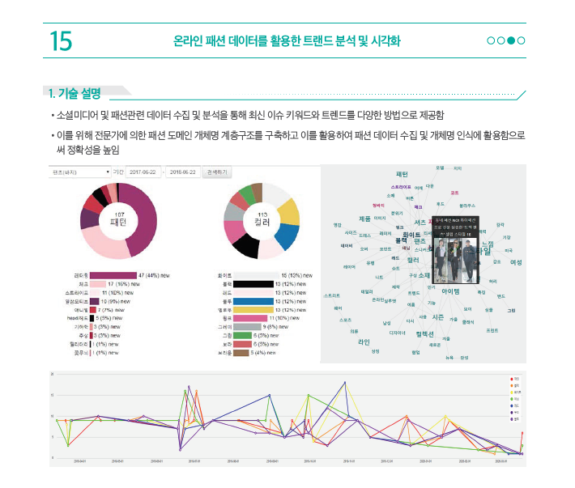
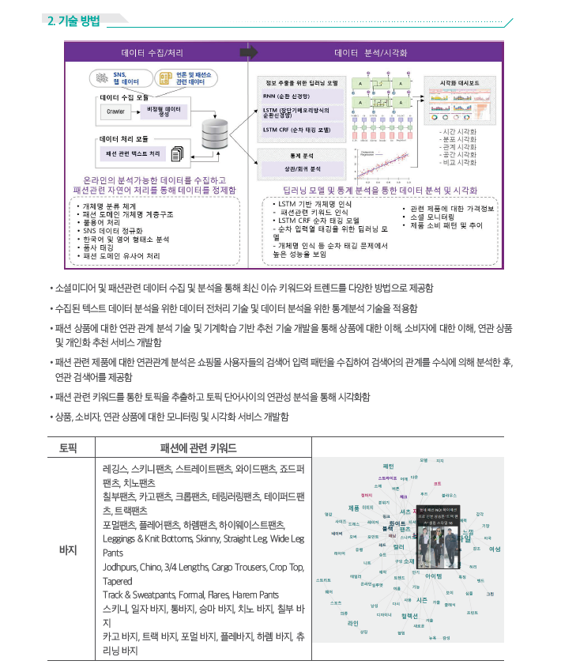

머신러닝 기반 보고서 자동 분석 및 키워드 추출 기술 Demo
메타러닝을 응요한 문서 단위의 관계 추출 Demo
비정형 위협정보 자동 인식 및 추출 Demo
머신러닝을 이용한 문서 자동 요약 Demo
딥러닝을 이용한 유사 문서 검색 및 시각화
Automatic Video segmentation based on Narrative
비지도 학습 알고리즘을 이용한 보고서 자동 분석 및 토픽 자동 추출 기술 Demo
순차 정보를 이용한 콘텐츠 추천 시스템 개발 Demo
지능형(암묵적)프로파일링 및 추천 기술
스케치를 이용한 패션 의류 검색 시스템 Demo
Eye tracking 기반의 휴먼 리딩을 반영한 추출 요약 기법
Sentence BERT 임베딩을 이용한 과편향 뉴스 판별
종교활동을 위한 휴머노이드 질의응답 로봇
NAO for Kids Education Demo
온라인 패션 데이터를 활용한 트랜드 분석 및 시각화

